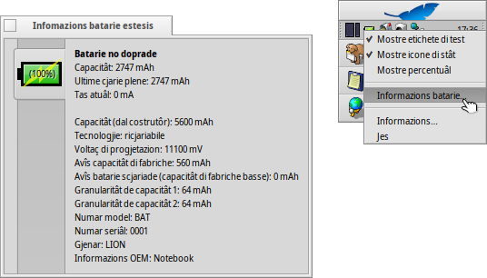

Stât de Batarie
Stât de Batarie
| Deskbar: | ||
| Posizion: | /boot/system/apps/PowerStatus | |
| Impostazions: | ~/config/settings/PowerStatus settings |
Stât de Batarie al mostre lis informazions in merit al nivel di cjarie de batarie, duncje al è util dome sui computer portatii. Se nol è in esecuzion, inviant la applet cheste e domandarà se e à di vierzisi in modalitât barcon o “vivi” tal Deskbar. In modalitât barcon tu puedis ridimensionâ la icone ridimensionant il barcon e doprâ la manite dal Replicant par strissinâlu sul scritori.
Pardut là che tu lu instalis, al ven doprât cuntun menù contestuâl, vie clic diestri.
Note: Stât de Batarie al à bisugne che al funzioni il supuart ACPI.
Il menù contestuâl al ufrìs chestis opzions:
| Al mostre il nivel de batarie in percentuâl o il timp che al reste. | ||
| Al mostre la icone de applet. | ||
| Passe tra la visualizazion dal nivel de batarie in percentuâl a chê dal timp che al reste ( al à di jessi atîf). | ||
| Al mostre il barcon cu lis informazions completis de batarie. | ||
| Al mostre il barcon cu lis informazions sul program. | ||
| Al siere la applet Stât de Batarie. |
Cuant che al è atîf, se la batarie e je in cjarie, il nivel de batarie al ven mostrât tra parentesis.